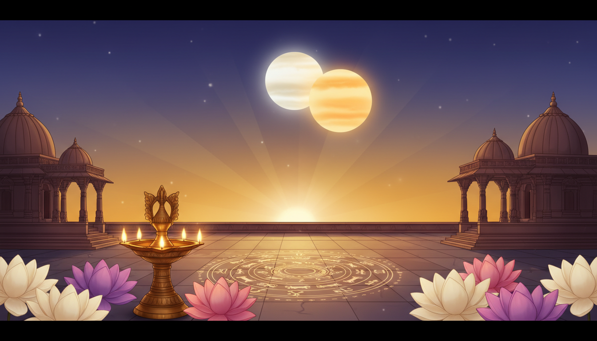

The next strong remedial astrology window for the Vedic Ghadi app is Panchak from June 6, 2026 at 7:04 PM IST to June 11, 2026 at 8:16 AM IST. This five-day period becomes especially engaging because the visible Venus-Jupiter conjunction peaks around the evening of June 9, 2026, placing relationship healing, devotion, money anxiety, family peace, and emotional counselling into one practical spiritual theme.

This topic works well now because it gives users a clear start time, end time, and middle peak. Panchak is traditionally treated as a cautious period for major beginnings, while Venus and Jupiter together create a softer devotional hook: how do we repair love, values, faith, and gratitude when the mind is restless?
Upcoming Time Periods
| Window | Start Time | End Time | Suggested Focus |
|---|---|---|---|
| Panchak Begins | June 6, 2026, 7:04 PM IST | June 7, 2026, sunrise | Slow down, avoid impulsive starts, set protection sankalpa |
| Panchak Main Practice | June 7, 2026, sunrise | June 10, 2026, night | Shiva, Hanuman, Vishnu, and ancestor remembrance; calm decisions |
| Venus-Jupiter Devotional Peak | June 9, 2026, evening twilight | June 9, 2026, night | Relationship repair, gratitude, Lakshmi-Narayana prayer, counselling |
| Panchak Closing | June 11, 2026, before sunrise | June 11, 2026, 8:16 AM IST | Complete remedy, donate, close pending emotional loops |
| Parama Ekadashi Overlap | June 11, 2026, early morning | June 11, 2026, 10:38 PM IST | Vishnu devotion and fasting discipline after Panchak closes |
Why This Window Matters
Panchak is associated with the Moon's movement through the last part of the zodiac, a zone traditionally handled with care because actions may feel amplified, delayed, or emotionally loaded. In counselling language, Panchak is not a time to panic. It is a time to reduce avoidable risk, pause before major decisions, and notice where the mind is acting from fear.
The June 2026 Panchak becomes more attractive for readers because it coincides with a sky event people can actually look for: Venus and Jupiter drawing very close in the western twilight, with the closest visual moment around June 9. Venus speaks to affection, beauty, comfort, relationship patterns, and desire. Jupiter speaks to faith, wisdom, counsel, teachers, and dharma. Together, they make a strong theme for healing the way we love, spend, forgive, and seek guidance.
Vedic Counselling Theme
The counselling prompt for this window is simple:
Where am I confusing comfort with healing, and where can devotion make my choices wiser?
This question connects astrology with real life. During Panchak, people may feel uncertain or heavy. During the Venus-Jupiter peak, they may also long for affection, approval, reconciliation, or spiritual reassurance. The app can guide users to slow the nervous system, avoid dramatic relationship decisions, and choose one grounded act of care.
Ayurveda And Holistic Wellbeing
For Ayurveda, this is a calming and sattvic window. Users should not make the remedy harsh. The focus can be light food, warm water, regular sleep, less screen stimulation after sunset, and gentle evening prayer. If fasting is chosen for the Ekadashi overlap on June 11, it should match health capacity. People with diabetes, pregnancy, medical conditions, eating disorder history, or medication schedules should avoid strict fasting unless medically advised.
Practical wellbeing suggestions:
- Eat simple sattvic meals during Panchak evenings.
- Avoid late-night arguments, doom scrolling, and unnecessary spending.
- Use fragrance, flowers, diya, or soft chanting to settle Venus-related emotional cravings.
- Use scripture reading, gratitude journaling, or teacher remembrance to strengthen Jupiter's wisdom.
- Sleep before the mind turns devotional longing into anxiety.
Devotional Remedies
Use Panchak as a period of protection and the Venus-Jupiter peak as a period of repair.
- Chant Om Namah Shivaya 108 times on any Panchak evening for steadiness.
- Offer a small diya to Lord Vishnu or Lakshmi-Narayana on June 9 evening.
- Recite Om Namo Bhagavate Vasudevaya or Om Shreem Mahalakshmyai Namah according to devotion.
- Donate food, yellow items, white sweets, or useful household essentials by June 11 morning.
- Avoid starting risky travel, major construction, or emotionally charged commitments during the core Panchak window if they can be rescheduled.
App Reminder Flow
- June 6, 2026, 7:04 PM IST: Panchak begins. Pause, light a diya, and set a protection sankalpa.
- June 7-8, 2026: Keep decisions simple. Do one calming practice before sleep.
- June 9, 2026, evening: Venus-Jupiter peak. Offer Lakshmi-Narayana prayer and write one relationship repair action.
- June 10, 2026: Avoid emotional overpromising. Complete one delayed duty quietly.
- June 11, 2026, before 8:16 AM IST: Close Panchak with donation, gratitude, and a clean next step.
Final Insight
The strongest blog angle is Panchak as a five-day spiritual caution window with a Venus-Jupiter healing peak inside it. It is not a fear-based post. It should help users transform a traditionally cautious period into a practical counselling journey: slow down, repair affection, respect dharma, and complete one sincere act before Panchak ends on June 11 at 8:16 AM IST.